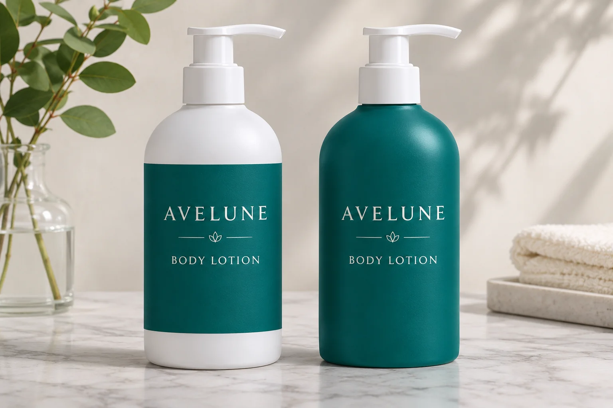
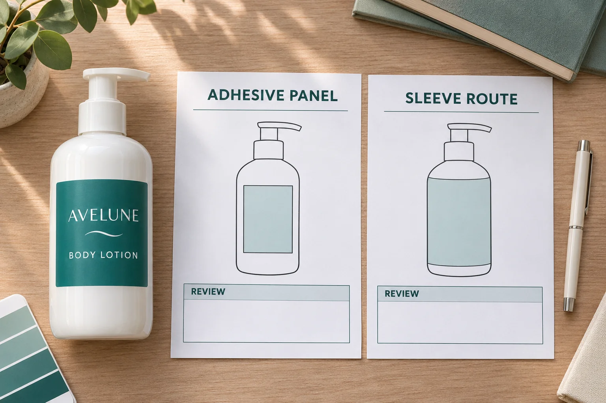

Choose a pressure-sensitive label when the intended panel and an accepted adhesive construction can deliver the required appearance through the available application route. Investigate a shrink sleeve when the brief calls for decoration around a larger contoured area and a suitable sleeve application process can be reviewed. Compare the finished pack and the operating route before comparing the price of the printed film.
A sleeve is not simply a wider adhesive wrap. It introduces a different construction and application process. This guide helps a cosmetic brand decide which route to investigate; it makes no claim that YT supplies shrink sleeves, sleeve machinery or application services.

Describe the required coverage
Show which surfaces must carry decoration and which need to remain exposed. Include the bottle geometry, shoulder, usable straight wall, closure, base and any opening or dispensing movement. Ask whether a conventional front-and-back arrangement or a pressure-sensitive wrap already provides the needed space. More covered surface is a design choice, not an automatic purchasing benefit.
If approved information does not fit, first confirm the copy and its placement with the responsible brand team. A sleeve can change the available decorated area, but it does not approve wording or make every covered region suitable for important text. The expanded-content guide addresses a different route for additional attached information.
For a tapered adhesive wrap, use the tapered dieline guide to review fit. A contour alone does not prove that a sleeve is necessary. Ask the technical parties whether the intended adhesive panel is workable on the actual container.
Compare application routes
Avery Dennison's pressure-sensitive label overview describes the face material, adhesive and liner construction and pressure application. CCL Label's sleeve overview describes film placed around the container and shrunk with heat. These descriptions identify different technologies; they do not establish the correct material, settings or operating limits for your pack.
Ask the filling or decorating operator what equipment and process it can actually support. For an adhesive route, obtain the confirmed roll or sheet and application requirements. For a sleeve route, ask the sleeve provider and operator to define the container, sleeve design and process review needed. Do not assume that a pressure-sensitive applicator can run the proposed sleeve.
Have the responsible technical parties consider the container, closure and intended process sequence. If the proposed route exposes the pack to a process not covered by the current approval, leave that compatibility question open. A digital rendering cannot qualify it. This article supplies no operating temperature, dwell time or universal production sequence.
Build a route comparison brief
Send the same pack requirement to the relevant providers. Record what each route can demonstrate and what remains to be reviewed.
| Requirement | Input for both routes | Decision to obtain |
|---|---|---|
| Coverage and access | Actual bottle, decorated area, exposed surfaces and closure movement. | Can the proposed layout meet the appearance and use requirement? |
| Application | Named operator, equipment and intended sequence. | Which route is supported and what process review remains? |
| Finished reference | Artwork, construction and representative assembled pack. | Who reviews fit, appearance, information and later handling? |
| Complete supply | Quantities by design, conversion, application, samples and delivery scope. | What does each confirmed proposal include and still require? |
First confirm coverage and pack access. Next obtain the operator's route response, then agree representative samples and approval owners. Compare prices only against those stated scopes. Mark a proposed route pending when a required operator, pack reference or compatibility review is missing. The worksheet produces an investigation choice or a scoped release decision; it does not certify the construction.

Consider where each route can make sense
A hypothetical lotion brand needs a front panel and a back panel on an established bottle. Its operator already supports a suitable adhesive route, and the required copy fits the reviewed areas. Continuing with pressure-sensitive labels may serve the brief without introducing a new application process.
Another hypothetical project requires graphics across a contoured body beyond the intended adhesive panel. A sleeve provider may be able to propose an appropriate construction and sample route, if the selected operator and pack can support the process. That is a reason to investigate the alternative. It is not evidence that a sleeve is cheaper, more durable or immediately production-ready.
Keep end-of-life requirements specific as well. Do not declare either route universally recyclable from its format name. Ask for evidence tied to the complete construction, container and intended collection system. If a recycling claim forms part of the brief, have its responsible owner review that requirement separately.
Keep alternative decoration decisions distinct
The direct bottle printing comparison considers buying decorated containers versus separate printed labels. This comparison concerns two applied decoration systems. If the available pack or operator changes, revisit the route rather than carrying a previous approval into a different process.
Hold a production choice based only on a coverage rendering or a film unit price. Ask what the actual provider and operator must still confirm, including application scope and representative finished-pack evidence. A route can remain a valid research option while being unsuitable for the current launch schedule.
Check the adhesive-label route against your pack brief
For cosmetic labels, send the bottle reference, required coverage, artwork, quantities and intended application operation. Ask what adhesive-label construction and sample review can be proposed. If investigating sleeves, confirm that separate provider and operator scope directly. The form prepares a message; files go by email or WhatsApp.
Prepare a decoration route inquiry